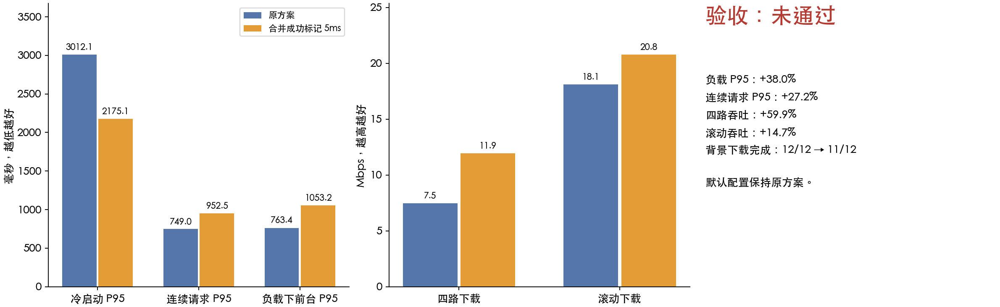
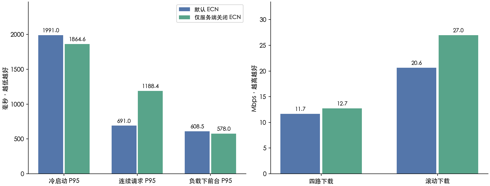

2026-11-22 至 2026-11-23 · 连接的安卓真机运行原生核心独立对照程序，使用公网隔离入口；不是正式 App 的全链路发布验收。Mac 和蜂窝仅用于补充诊断。

原来的阶段统计把等待入口成功标记计入了“目标 TLS”。Next Dial 返回只表示 OPEN 已排队，不能据此判断入口耗时低于 1ms。已补充 status 读起止、首段业务数据和逐包偏移记录；原报告的端到端首字节与吞吐值仍有效，阶段归因已更正。
已关联到同一请求：服务器发送流偏移 0 的成功字节，原包在客户端未观察到，后续偏移的 TLS 数据先到，但有序流必须等偏移 0 的恢复。代表请求中，后续 TLS 数据早到约 108ms；成功标记到达后约 14µs 就交付了首段数据。该证据确定了阻塞机制，尚不能确定包是在安卓、路由器、运营商、虚拟化网络还是途中其他位置延迟或丢失。未将其归因于 GFW。
代表逐包证据见 包号与偏移证据 JSON，各轮原始记录也在本包内。上一轮完整报告（仓库相邻目录）保留更早的时间线。元数据包含包号与偏移，不包含业务负载、令牌、私钥或真实 QUIC CID。
服务端新增可选的 ReplyCoalesceMillis=5：把成功字节与第一段目标数据放进一次写入，减少独立小首帧。若目标暂不发送数据，5ms 定时器触发单独写出成功标记，兼容需要先收到成功标记再发送数据的旧客户端；目标立即 EOF 时也刷新。计费只计算业务字节，不把状态字节重复计入。线上字节顺序、认证、加密、BBR、路由策略均不改变。默认值 0，保留原行为。
机制验证开启诊断：每版本 3 轮，各 36 次冷启动、36 次连续请求。候选版 78/78 个流合并发送，独立偏移 0 / 长度 1 的发送帧为 0；原方案为 107 次（含重传）。单元与集成验证覆盖定时器竞争、旧客户端等待 ACK、server-first、EOF、认证失败、目标失败与流量计数；race 与 vet 均通过。目标位于同一 VPS，因此更容易在 5ms 窗口内获得数据；真实远端目标若更慢，会触发定时器而无法合并，不能把 78/78 合并率推广到所有网站。进一步按包号与偏移关联：原方案 72 个冷/热请求中，13 个在流头恢复时解除状态等待；合并方案仍有 15/72 个，元数据截断计数均为 0。合并减少了独立小首帧，但不能消除合并后首段本身未及时到达造成的有序等待。它不是所有尾延迟的修复。计数属于机制样本，不用于宣称差异显著。详情见 mechanism/recovery-summary.json 和 proofs.json。机制改善不等于端到端性能改善。
| 指标 | 原方案 | 合并成功标记 5ms | 样本 / 负载 |
|---|---|---|---|
| 冷启动首字节 P50 / P95 | 973.5 / 3012.1 ms | 838.4 / 2175.1 ms | 各36次 |
| 连续请求 P50 / P95 | 325.1 / 749.0 ms | 423.1 / 952.5 ms | 各36次 |
| 负载下前台 P50 / P95 | 423.8 / 763.4 ms | 438.2 / 1053.2 ms | 各72次 |
| 前台 / 背景下载成功 | 72/72；12/12 | 72/72；11/12 | 背景2×16MiB，前台12次，每组6轮 |
| 四路下载有效吞吐 | 7.47 Mbps | 11.95 Mbps | 各6轮，4×4MiB，24/24完成 |
| 滚动下载有效吞吐 | 18.12 Mbps | 20.79 Mbps | 各6轮，12×4MiB / 4并发，72/72完成 |
| 并发小请求 P50 / P95 | 413.1 / 613.6 ms | 396.1 / 730.5 ms | 各36次，4并发 |
两版本在相邻轮次交替先后，使用原 next-opt 调度、默认 GSO / PMTU、同一目标与大小。目标为该 VPS 上的固定 TLS 1.3 HTTPS 测试服务，减少第三方网站波动；这些是隧道对照数据，不代表所有网站的实际体验。冷启动为新建入口连接；连续请求复用入口连接，但每次仍新建目标 TLS 连接并发起 HEAD。性能轮关闭逐包诊断；两边保留相同的轻量选路记录。吞吐为校验通过的字节总量 ÷ 各轮总耗时，未删去失败轮的时间。P95 使用最近秩法；成功率另列，不能只看成功请求的分位数。各轮样本有限，尾部分位数容易受少数请求影响，未宣称这些差异达到统计显著或适用于全部网络。
预设门槛：负载 P95 至少降低 20%；连续请求 P95 不恶化超过 10%；两类吞吐不低于原方案 90%；完成率不降低；各至少 48 个负载请求。实际未通过负载 P95、连续请求 P95、背景完成率三项，因此不启用候选版。冷启动改善和吞吐改善不足以抵消此次退化。
| 服务端条件 | 连续成功数 /48 | P50 ms | P95 ms | 状态等待 P95 ms |
|---|---|---|---|---|
| default | 48 | 453.3 | 1088.3 | 495.6 |
| no-gso | 48 | 572.4 | 1155.1 | 267.0 |
| fixed1200 | 48 | 644.9 | 1150.1 | 447.6 |
| no-gso-fixed1200 | 48 | 450.2 | 882.4 | 215.1 |
4 条件采用 4×4 交错顺序；每条件 48 次冷启动与 48 次连续请求，带诊断，仅用于定位。实际 GSO 功能开关和固定 1200 上限均已从记录核实。GSO 可用不代表短请求里每次都实际合并了多个 UDP 包；该实验不能排除大流负载下的发送批处理差异。抓包仅保留时间、方向、UDP 长度，共 11334 个包，抓取内核丢弃 0；最大观察 UDP 负载 1441B。首轮日志提取超时发生在测试及清理完成后，已用压缩方式完整补回日志。
缺口也涉及明显小于 1200B 的包。关闭 GSO 或固定包长单项没有稳定改善，不能认定为 GSO 故障或 MTU 黑洞。QUIC PacketSent 不是网卡实际发出的证明；“发送端有记录、接收端没观察到”不是物理丢包率，还可能包含延迟包、关闭后冗余重传。服务器 UDP 全局错误计数没有对应增量也不能排除其他环节。
| 条件 | 连续成功 / 总数 | P50 ms | P95 ms |
|---|---|---|---|
| cellular-baseline | 12/12 | 322.1 | 479.8 |
| cellular-baseline-pilot | 1/1 | 373.5 | 373.5 |
| cellular-coalesce5 | 12/12 | 711.6 | 1280.8 |
| wifi-after-baseline | 12/12 | 781.7 | 1006.0 |
| wifi-after-coalesce5 | 12/12 | 284.6 | 644.6 |
| wifi-before-baseline | 12/12 | 315.2 | 484.2 |
| wifi-before-coalesce5 | 12/12 | 422.1 | 611.6 |
蜂窝仅做小请求，不做大文件下载。Wi‑Fi 前后与蜂窝的合并方案表现方向不一致，不把这些组混成一个排名。
| 设备 / 服务端 ECN 条件 | 连续成功 /48 | P50 ms | P95 ms |
|---|---|---|---|
| android-default | 48 | 400.7 | 1000.7 |
| android-noecn | 48 | 326.6 | 712.4 |
| mac-default | 48 | 223.3 | 691.2 |
| mac-noecn | 48 | 326.6 | 893.1 |
每个条件 48 次连续请求，4×4 交错顺序；所有条件均关闭成功标记合并，GSO / PMTU 保持默认。noecn 仅在隔离服务端进程关闭 ECN，没有修改系统全局网络参数。安卓首轮关闭 ECN 后 P95 改善，但 Mac 方向相反，不能就此认定 ECN 是原因。默认组实际观察到 ECT(0) 和 ECN capable，并不能单独证明 ECN 造成延迟。日志中的 key_unavailable 均属于旧 Initial/Handshake 包，未观察到对应的 1-RTT 业务解密失败。
| 固定源端口复核 | 成功 | P50 ms | P95 ms | 观察到的对端标记数 |
|---|---|---|---|---|
| android-default | 72 | 572.0 | 1228.5 | 1 |
| android-noecn | 72 | 552.2 | 1009.7 | 1 |
对端标记使用本轮私有随机盐进行不可逆摘要；仅用于核对公网 NAT 映射是否保持一致。两组均72/72成功，6对中5对的P95改善。相同公网映射减少了路径变量，但不证明每个包的中间路由完全一致。结果仍属于带诊断跟踪的短请求实验，不是负载验收。

| 关闭诊断后的 ECN 性能验收 | 默认 | 仅服务端关闭 | 样本 |
|---|---|---|---|
| 冷启动首字节 P50 / P95 | 501.6 / 1991.0 ms | 759.5 / 1864.6 ms | 各36次 |
| 连续请求 P50 / P95 | 326.4 / 691.0 ms | 328.9 / 1188.4 ms | 各36次 |
| 负载下前台 P50 / P95 | 341.7 / 608.5 ms | 330.4 / 578.0 ms | 各72次 |
| 背景完成率 | 12/12 | 12/12 | 各6轮，2×16MiB |
| 四路下载 | 11.66 Mbps | 12.75 Mbps | 各6轮，4×4MiB |
| 滚动下载 | 20.61 Mbps | 26.98 Mbps | 各6轮，12×4MiB /4并发 |
各轮交替先后，两边保持成功标记立即发送、原 next-opt 调度、默认 GSO / PMTU。该轮使用默认随机源端口，测试真实默认连接生命周期；固定端口实验只用于前一节路径诊断。门槛与合并发送轮相同，独立统计，未混合两个时段。
验收：未通过。逐项结果：{'enough_loaded': True, 'loaded_p95': False, 'foreground_complete': True, 'background_complete': True, 'parallel_complete': True, 'parallel_throughput': True, 'rolling_complete': True, 'rolling_throughput': True, 'warm_not_regressed': False}。短请求诊断中的改善不能替代负载验收，未在生产入口关闭 ECN。
保留原来的默认发送、GSO、PMTU 与 ECN 策略。合并发送作为默认关闭的实验选项留存。未安装新的正式 App，未改生产 443 / 18447 服务。本轮已完成关闭诊断的 ECN 独立复测：吞吐有所提高，但连续请求 P95 退化，未达到延迟目标。两种候选都保持默认关闭；GSO / PMTU 实验也没有找到可发布的稳定修复。
剩余关键问题是未及时交付包的具体位置，以及合并发送后尾部为何仍退化。当前证据不足以把所有慢请求归为同一原因；继续改拥塞或并发参数前，应保留前后端同包关联和网络对照。
性能汇总 JSON · 事先验收门槛 · ECN 初轮汇总 · 构建、自检与清理记录